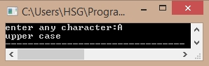

#include<stdio.h> void check(char); void main() { char ch; printf("enter any character:"); scanf("%c",&ch); check(ch); } void check(char c) { if(c>=65&&c<=90) printf("upper case"); else if (c>=97&&c<=122) printf("lower case"); } Output: 